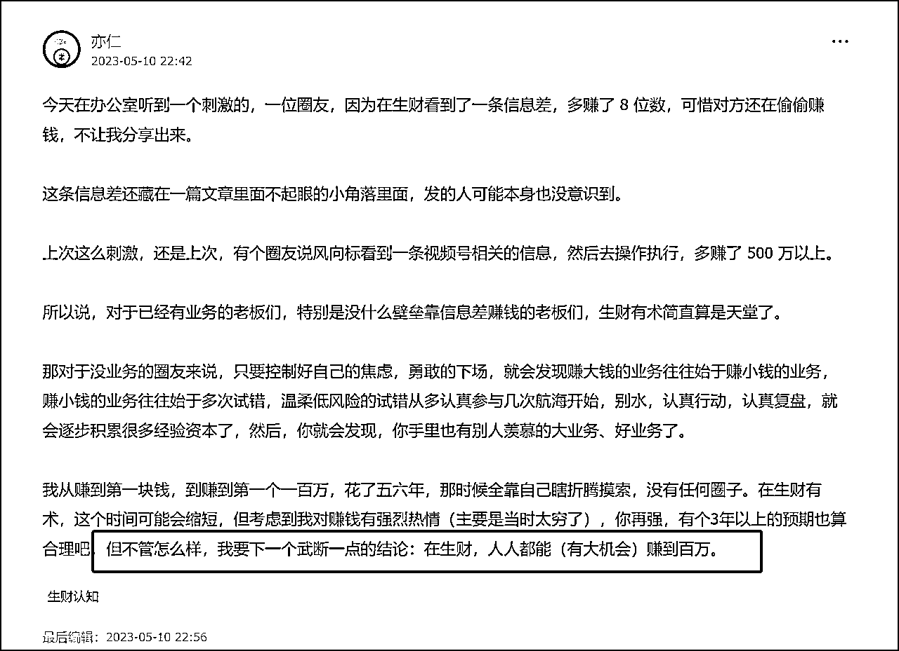
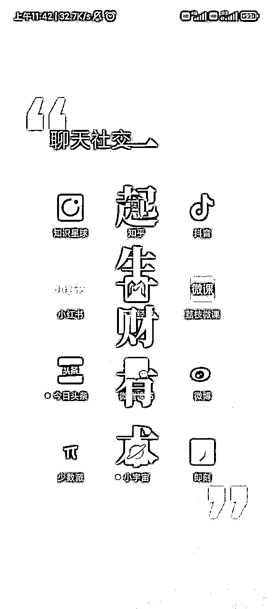

来源：https://mkfwp3u79v.feishu.cn/docx/EczedcCNzo6yUEx3IsacIGvOnkc
1.推荐用电脑或平板来看，阅读体验更佳！
2.
文章很长很长，你不需要全看，也不是你一天能看完的。
建议第一次先从【信息差之术】开始看，来开开眼。
剩下的部分，挑你感兴趣的看，每次就看个2-3篇就行。
文章可以先收藏，以后遇到啥问题了，再倒回来查阅，不用一次全部看完。
如果你打算一次性学完这些东西，和我一样疯狂烧脑，让自己的商业思维迭代一版？
那我建议：抱着花2周的时间去学习的心理预期，来对待这篇帖子。
我是七小，99年的深圳靓仔，知识管理专家。
精通搜索、采集、内容整理、关键词挖掘，擅长把碎片化信息整合成体系化的知识产品来变现。
江湖人称生财课代表，专业解决生财新人圈友的各种问题，致力于帮助圈友发挥好生财有术的价值。
微信：rickea150，添加请备注：生财圈友
欢迎价值互换的交流，欢迎围观朋友圈，欢迎好心人请我喝咖啡。不提供免费答疑。
公众号：七小的人生游戏攻略
哈喽，大家好哇，我是生财课代表，七小。
众所周知，生财的信息量很大，帖子多的让人看不完。而我加入生财的早期，又做了很多精华帖整合的工作，帮大家节约了找帖子和学知识的效率，故而得名【生财课代表】
过去几个月，在生财里参与了多场项目，案例库拉新、GPT社群、418拉新... 所以最近写的帖子，都是项目复盘贴，有好长一段时间没写整合贴了。
最近算是得闲了，刚好5月份研究AI，也大大提升了我整理精华帖的效率。 理论上，我现在可以做到稳定一周产一篇整合贴了。以及，我有一个比较宏大的目标：我想尝试，把生财第五期知识库里的帖子，按照专题，都整合一遍。
不一定能成功，但是我想尝试一下。 预计今年，我会在生财，再发15-20篇帖子吧，期待一下我能做成啥样，哈哈。
今天的这篇整合贴的主题是【信息差】，想法起源于：在生财里，我听了N次信息差赚钱的说法，但是我并不理解，到底啥是信息差赚钱？怎么靠信息差赚钱？
为了弄明白这事情，我在生财搜索引擎里搜【信息差】这个关键词，又打开了100多篇精华帖来看。（我浏览器界面是这样的，部分截图）
看完之后，我就有两个感受：
1、卧槽、卧槽、卧槽... 这哪里是辛苦挣钱？这真是弯腰就能捡钱呀。
2、视角一变，商机无限。
这个专题的内容，在我翻阅的时候，是深受震撼的。看完之后，我觉得我理解了亦仁说的：在生财，人人都能有大机会赚到百万。

希望大家今晚看完这篇文章，也能顿悟这句话的含义，早日找到属于自己的百万机会~
简单地总结以下几点信息差获利准则：
1. 让价值流通，本身就是一种价值
2. 和更多的圈层泡在一起
3. 跨越圈层，搬运需求
-------------------------------------------
1.让价值流通，本身就是一种价值
在讲如何培养信息差获利能力之前，有一个问题，我想很多人都没有弄清楚，甚至根据没有去细想，那就是为什么信息差可以获利？
在我们的意识里，商人走南闯北，把南方的货物卖给北方人，再把北方的特产卖给南方人，一来一回赚个盆满钵满，这是非常正常的事情。
这就衍生出一个问题：为什么以前商人获利，需要南北千里奔波，把丝绸之路走完要累个半死，现在普通人在家就能利用信息差获利了？
你可能要说，因为现在有互联网了啊——这个回答不完全对。
我们知道，最早商人这个词，来源于商朝。因为商朝人喜欢做生意，所以就把做生意的人称为商人。
我们的历史书里，对商朝的印象一直都是残暴、奢靡（确实没错，商朝经常活祭），但商朝有他们浪漫的一面，他们带着青铜器、纺织品满世界交易，把生意做到了东海、南海和新疆，商业极度发达。
但自商朝以后周朝开始，我们国家长时间的策略都是重农轻商，为什么呢？
因为社会整体生产力不足，很多人饭都吃不饱，商人提供的流通价值就没有那么重要。
所以，生产力就是商人利用信息差获利的一个重要基础，生产力越充足，流通的价值就越大。
像最近电商直播飞速发展，为什么？因为这么多年工业发展之后，我们国家在某些领域的制造能力已经溢出了，特别是疫情之后，连外贸工厂也要往国内销货了。
当大批低价优质的生产力得不到释放时，流通需求就非常迫切。可问题是，生产力越是旺盛，流通反而越是困难。
举个例子，上世纪90年代，产品触达消费者最好的方式是什么？、
在央视黄金时间做广告。
从1995年央视的黄金时间广告开始招标起，往后几年的标王全部爆卖。
孔府宴酒在1994年销售额只有3.5亿，花3000万买了央视广告标王之后，两个月就卖了2.7亿。
1995年秦池全年销售额只有1亿，花6666万买了央视广告标王之后，96年销售额暴涨到9个亿。
为什么央视广告效果能这么好？
因为那个年代，不管你是穷人还是富人，大家黄金时间看的都是央视，自然也都看一样的广告。
但现在的产品再去央视无脑打广告试试，可能亏的底裤都不剩。
你看，生产力提升之后，我们的生活质量都上升了，生活质量一上来，整个社会就开始分层了。
不同地域、收入、兴趣的人，解构成一个一个小圈子。不仅富人跟穷人玩不到一起去，甚至富人和富人之间、穷人和穷人之间，互相也看不对眼。
社会圈层被解构成无数个小圈子，触达所有圈层的难度增大了，流通的价值也就增大了。
信息差里的“差”，就“差”在这里。社会越发达，圈层越多，差值越多，信息差获利就越容易。
所以：
不要觉得信息差获利是在投机倒把，让价值流通起来，本身就是一种价值。
所谓信息差，本质上是圈层之差，如果你不能理解圈层，你就理解不了信息差
原文链接：https://t.zsxq.com/0eLAhPcnE
作者：花爷梦呓换酒钱
套利三要素，即：信息差、低成本、确定性
信息差就是蓝海思维，规避竞争，别人不知道就你知道，比如十年前的跨境电商。很多成功的老板其实是蓝海偏执狂。
低成本就是尽量减少初期投入，包括时间成本和资金成本两方面，比如已经臭名昭著的“跨境电商一键铺货代发”就是这样的。跨境电商十年前是可以做到低成本无脑创业的，现在已经不大可能，只有一些专业的打法可以做到类似感觉，这个日后另作分享。
确定性就是1.确定很赚钱利润空间很大，2.确定已经有人跑通了。要尽量避免自创模式，多尝试模式复制。确定性最好满足信息差和低成本两个前提，当信息差足够大，投入足够低的时候，往往也代表着高确定性。
那么网红tufting店是否满足方法论里的套利这一层呢，tufting这个项目的信息差最早起源于2021年12月的小红书，当时信息差十分巨大，在2021年底和2022年1月第一批在中大城市抢先开店的几乎都是1-2个月收回所有成本投入（甚至包括预付的半年房租），投入成本方面，房租3000-6000即可启动，设备及软装投入1万左右（前期投入在本文第4小节具体分析），这在线下实体店中是明显属于低成本的。一副tufting的物料消耗成本在10-20元区间，而客单价普遍可以做到200-400元，这就是赚钱确定性，第一批开店成功的店铺模式则为我们提供了模式确定性。
不专业的人选品，专业的人选模式；先变专业，再变有钱。
生意的底层在很多时候是差不多的。所以，中小创业者请记住：无套利不创业。
原文链接：https://t.zsxq.com/0eZVH9hUG
作者：跨境杨少
一、朋友圈
二、跟同行要项目
三、平台热榜
四、app下载平台
五、平台数据
六、保持好奇心
七、中外联合，世界流通。
八、投诉网站，防骗博主。
九、保持敏感度
十、各大平台付费栏目以及栏目
十一、圈子
----------------------------------------
太阳底下没有新鲜事，同行是我们找项目的第一渠道。
君子善假于物也，这是被大家说烂的方法论，不过这里说几个常用的找同行的渠道和方式吧。
同行哪里找？
有些时候你不需要找网站，你只需要找导航网站。找到导航网站了，你就找到了几百个上千个分类网站，给大家推荐的一个导航网站，猎手导航，这个导航网站页面比较简洁，用导航网站找导航网站，然后从导航网站进入分类网站，基本上国内的局域网你能大概覆盖。
看别人在哪花费时间与金钱，说明那类顾客就越有价值。
时刻保持对数据的敏感度，比如如果你的竞品或者同类词，出现了严重数据异常，那你应该在警惕中保持着兴奋。
比如查询这些数据异动的原因，对手是不是在小红书做了投放，在抖音搞了直播，在微博铺信息流，做了优惠活动等等，然后体验对手做的一系列营销活动，再通过与对手产品销售和传播数据的对比，估摸出同行这次的投产比正负。
如果是正的，赶上;如果是负的，更好，省了不少钱，相当于同行为你铺路了。
一抄二改三复制四改命。
记住这个截字诀：看到赚钱项目截过来呗。
1、看他们要开发什么
比如上外包大厅，掏几千上万就要开发的，多半是有大钱可以赚。
比如上互站这些买卖源码的网站，很多最新的求购源码都可能是新的风口。
2、看他们开发小程序
上小程序外包网，看遍外包网，然后想想哪些能为你所用。
3、看他们的广告
一些站长论坛，网赚论坛，羊毛论坛，网盟广告、电视购物广告、竞价、各种网站广告和平台小广告来挖掘产品项目，然后加上联系方式，试着体验一下这个项目操盘的流程，没准就能找到适合你的项目。
4、看他们的媒介
关注同行的各大平台账号，比如抖音，快手，视频号，知乎，贴吧等，看他们在做什么投放，做什么矩阵，做什么广告，做什么带货等，观察可模仿的产品，服务，引流方式等，然后为己用。
原文链接：https://t.zsxq.com/0ejyEyF2s
作者：老成
【求图】【跟团】【怎么领】这些评论区里直白的需求表达，对应的不就是商机满满的笔记。
如果能找到这些笔记，找到对应产品，摸清变现模式，评估收益，就能挖到一些正在低调赚钱的项目。
我把上面三个需求词，放到千瓜数据的按笔记评论搜索，顺藤摸瓜找到了笔记、对应的产品或服务。
原文链接：https://t.zsxq.com/0enRc0veb
作者：梨云
原文链接：https://t.zsxq.com/0eAsoyi6X
作者：淼淼
什么样的机会值得把握，什么人能把握住什么样的机会，怎么把握机会实现上岸，你需要看看自己枪的射程。
琐琐碎碎说了那么多，其实就是围绕着机会本身。
任何一只猪都需要站在风口上。大到股市、楼市，小到红包封面、支付宝拉新、CH，每个人都像猎人一样，警惕地看着机会时时刻刻在我们身边出现。但是，什么样的机会值得把握，什么人能把握住什么样的机会，怎么把握机会实现上岸，你需要看看自己枪的射程。
无论是从失败学习，还是向成功学习，关键是有了学习，又有了学习之后的再出发，希望本文拎清自己几斤几两，看到优质机会，匹配合适项目，冷静坚持就能到达你所想之处。道路千万条，安全第一条。对于商业模式，最大的风险就是不盈利的风险，最大的机会永远都是自己能把握住的机会。赤条条来，赤条条去，认知本身谁也拿不走，谁也送不了。
原文链接：https://t.zsxq.com/0eiYXSZm5
作者：胖猫
分享的本质是什么？让看到的人改变思维和行动，少付出不必要的成本，少浪费时间、金钱和精力。
每个人都有独特的经历，从这个意义上说，每个人身上都有值得分享的信息，要考虑的无非是如何把信息封装成一篇适当的内容，传递给适合的人。
【类型1】提供信息（know-what）
小白也能分享的内容，就是信息差。
信息差的存在，最常见的原因有三个：
（1）我知道，你不知道。也就是说，单纯是我看到了，你没看到，我告诉你 —— 我在消除信息垄断
（2）我知道，你也知道，但是你和我擅长的专业领域和知识架构不一样，所以从同一条信息里解读出来的东西也不一样。我愿意告诉你，你可能没有发现的价值 —— 我在消除认知垄断
（3）我知道，你也知道，但是信息太分散、你没空慢慢找、慢慢整理 —— 我在帮你节省时间
所以，应该做什么？
整合信息、让信息有序。
动脑子、用心整理，让信息能容易被其他人接收。
【2】提供知识（know-how）
能够解决问题，指导别人达成结果的信息，才是真正的知识。
每个人都有自己的一亩三分地，都是某个细分领域的专家。
但是，由于我们太了解自己认知范围内的事情，所以容易误以为其他人也是这方面的专家，或者误认为我们知道的常识、其他人也知道。
要么分享得太多，给看的人造成了理解压力；
要么分享得太少，缺少操作步骤、对关键细节的说明，让人没法上手操作。
所以，跨界说懂的前提，是把接收信息的人放在心里。
心里要有【一个】【具体的】沟通对象。
根据具体的沟通对象，来决定信息的颗粒度。
【3】提供知识架构（structure）和规律模式（pattern）
在一个实战派扎堆的圈子里，那这里的人普遍不缺学习的动力、不缺钻研细节的精神、也不缺执行力。
但是，集中精力做事的人，容易不小心忽略全局。
所以，又有实战能力、又在细分领域长期研究的人，可以提供的最有价值的内容，就是全局观。
知识架构、对规律的总结，都属于这一类知识。
知识架构，专业书和经典教材里都有。
客观规律，无数前人早就总结过。
只要收集起来，给人说懂，就可以了。
也没那么困难。
原文链接：https://t.zsxq.com/0eeIrZIJd
作者：白一喵
背景：
1. 快手、火山上有很多有意思的十几秒的视频，每看完一个需要去切换另外一个；
2. 微信的用户和快手的用户重合度还不是非常高；
3. 一些微信用户有猎奇心理。
思路：
1. 找到有意思的视频，联系快手po主获取到对方授权；
2. 将该播主的几十个短视频拼接成一段长视频；
3. 将长视频长传到腾讯；
4. 写一篇文章简单介绍该播主并内嵌该视频到文章；
5. 分享传播该文章；
6. 每篇文章介绍一个快手玩家。
原文链接：https://t.zsxq.com/0eK2Tgays
作者：亦仁
什么是CPA拉新，或者我们叫APP拉新，简单来说就是帮APP厂家拉新一个用户拿到多少佣金的项目。
比如你可能听过，推荐人开信用卡可以获得150元、推荐一个人注册快手极速版可以获得20元、推荐一个人注册下单美团优选小程序可以获得22元拉新奖励……这些都是我们的拉新任务。
点开截图，这里可能有人会有疑问，别人快手极速版不是70块钱吗，到你这里怎么20元了。这个后面再详细说吧。和接的渠道及任务难易程度有关。
2.汇集200+APP任务，佣金3000+以上的变现工具
目前我们汇集了市面上200+优质正规拉新推广任务，总佣金保持3000+以上。平台任务采取统一管理模式（非悬赏和商家模式），所有任务对接结算和审核都是我们商务和客服团队负责。保证结算和审核稳定。
原文链接：https://t.zsxq.com/0evgSp06j
作者：三米
我把认知差分为三要素：资源差，技术差，信息差。
对于大多数人而言，资源和技术，你没有。
你只能靠信息差致富。
我身边的大多数人，甚至现在我身边赚钱的人，无一例外靠的还是信息差，
我举个例子，我第一桶金怎么赚来的：卖淘客软件。
当时朋友在做淘宝客，我就找这方面的软件，找到了一个软件之后，我做的事情不是买他们的软件，是付费成为了他们的代理商。后续陆续的代理了几款软件。
月卡赚大几十，年卡赚大几百，当时就是处于一个市场的红利期。
抓住了这个信息差而已。
再比如淘客这个生意：不也是信息差，无非是我们知道个软件，知道淘宝联盟，就是一层窗户纸，但是就是造就了一批千万富翁。
所以想快速致富，
①找到红利行业：红利行业是流量的簇拥地，所以流量很容易获取，且大家都认为这是一个很大的机会。
②找到信息差：你只需要找到这里面的一些信息差，然后卖给新进场的人既可。
再举个例子：你们是不是认为培训行业赚钱？
现在最赚钱的培训行业是什么？抖音，毫无疑问！
因为这是个红利赛道，那么掌握抖音玩法信息差的人就是站在时代的风口上在赚钱的人，所以这些人赚到大钱是很正常的。
红利市场分为两种机会，一种稳赚不赔，一种盈亏参半。
稳赚不赔：卖信息差（软件/服务/培训等等）我不做这个事情，但是我教育市场。服务于想要做这个市场的人，稳赚不赔。
盈亏参半：主动下场去和这些玩家厮杀，有一定概率会赢，但是输的概率更大。
我们赚的钱，只是时代的红利，和我们的努力有关系，但是更多的靠的是我们的选择。
抖音上卖信息差发家致富的太多太多：
最近比较热的：云蹦迪，光盘修复，
之前比较热的：音乐U盘，老照片修复，等等
以后还会出现各种信息差，如果你想快速致富，找到信息差，贩卖信息差即可。
玩法注定是一时的，但是信息差的贩卖是长久的。
所以快速致富离不开两点：时代红利，信息差。
原文链接：https://t.zsxq.com/0eq5R1mdw
作者：低调
兼职咸鱼可以选择的是基于【自身】赚钱的需求：所以兼职的话策略无非就是三个：
1.客单价（利润），2.高转化（低竞争），3.低消耗（时间，精力）
1.高客单价产品，主要是利润，考虑数码，电器，奢侈品，文玩，名牌鞋子等等，不解释。
2.除了客单价高，还需要选比价困难的二手产品，比如电器产品，二手冰箱，二手洗衣机，二手空调。选比价困难的二手产品的依据是避开客户比价，和同行对比竞争。
原文链接：https://t.zsxq.com/0eANqw6bS
作者：昱龙说
什么是生财的势能，我个人的理解就是：个人对赚钱机会的嗅觉，并且实际把握住了稍纵即逝的机会，这个机会可能是时间、可能是某个节点、可能是某一个巧合，而这些势能的风向标，又是有迹可循的，也有一定的逻辑进行梳理，结合风向势能，我更多的把赚钱的思路梳理为这个公式：
风向（热点、政策、趋势、节点、时间）--需求--内容（流量）--产品--转化率--赚钱
其中在风向之后有诸多的变量因素，会将这个势能放大或者缩小，大部分的势能窗口期往往很小，机会稍纵即逝，只有个别风向势能有可能成为现象级的存在，站在这个口子上，跟对人做对事，猪就起飞了。
原文链接：https://t.zsxq.com/0enbVNEVA
作者：沐文
这个事情，前前后后差不多持续了一年，后来因为大家也基本都会用淘宝后，就没继续做下去了，也帮我赚到了人生第一桶金：近十万块钱，更重要的，让我在很早的时候，理解了一些与赚钱相关的道理：
1. 信息差是可以赚钱的，只要有这种gap，就说明有赚钱机会；
2. 靠信息差赚钱的事情不会很长久，所以不要觉得现在赚一点钱就觉得高枕无忧；
3. 想赚更大一点的钱，得往上游走，得建立团队，一批人帮你去卖，单靠一个人，势单力薄赚不了多少钱；
4. 得有品牌意识，比如在学校提到买数码产品，他们就想到大学生数码联盟，无形中带 很多销量。
原文链接：https://t.zsxq.com/0eUTBrQda
作者：亦仁
商业机会都是从发现信息差开始，然后早期进入市场的人开始圈资源做规模，继而阶段性、区域性垄断细分市场（垄断核心要素资源）。再来就是从具体的资源性垄断到认识层垄断也就是做品牌，形成市场共识，最后就可以参与制定底层的商业规则。当一家公司可以制定行业标准和规则的时候，就一定是巨无霸了，因为它已经在用市场的力量参与政治利益的博弈了，比如缩短产品使用寿命。
原文链接：https://t.zsxq.com/0eevMYuuC
作者：李晨
一：第一阶段—破局点
很多人的意识里代购只是从国外到国内物品流通的一条渠道，价格相比正常渠道会低一些，但我会想：代购的本质是什么？是赚信息差的钱。
由这个信息差去反问自己：哪里有信息差呢？只有国外和国内？
我老家是在杭州下属的一个县城，过年过节的时候，杭州各大商场都会有活动，很多朋友同学会驱车到杭州来采购，对呀，这就是信息差呀，我想到的是有更多的人有这样的现状：
1.不知道在国内可以买到更具性价比的物品；
2.知道可以买到更具性价比的物品但因为各种障碍性因素（比如地理位置）而无法买到；
所以，破局点就这么出来了：国内代购
由这个破局点又引发了三个问题：
1.为谁代购呢？
2.代购什么呢？
3.到哪里去代购呢？
第一个问题，为谁代购呢？
老婆和她姐姐是做香港代购的，代购化妆品，也代购童鞋（香港的品牌鞋比内地要便宜很多），群体是妈妈们，好了，具有一定用户基础的顾客群体就这么愉快的确定了。
第二个问题，代购什么呢？
这个问题想了蛮久的，想很久的原因是想筛减，因为符合妈妈群体的物品太多了，最终我们选择了童装作为切入口，原因有以下几点：
1.大方向上，当时二胎放开，市场容量会越来越大；
2.消费升级，妈妈们对孩子穿的重视度在加强；
3.社交媒体上，妈妈们喜欢晒娃，便于传播；
4.童装的购买频率相对高；
5.童装相比成人服饰，售后的问题会少很多；
6.自己有孩子，也经常关注童装的信息。
第三个问题，到哪里去代购呢？
杭州是个不大不小的城市，我和老婆也会去折扣店购物，对呀，不是所有的城市都有折扣店呀，折扣店的布局需要好多因素（包括人口，经济，地段等），一查，相比于全国的城市数量，折扣店的数量真的是寥寥啊，就这样，这个问题也解决了。
到这里为止，一个小小的国内代购闭环思路就形成了，但这样的操作只是前期阶段的破局点而已，和后面形成的淘宝店实则有很大的不同。
原文链接：https://t.zsxq.com/0efuPVyLh
作者：星星
《剑灵》刚刚开始发布的时候是个现象级的游戏，所有的玩家都抢破头来玩。游戏的付费点是会员和商城中时装，把整个商城的时装都买了也就不到1000元，对比现在的游戏，付费点是不是特别少。于是游戏内的材料和金币就成为土豪们的狩猎对象。一个金币最高可以卖100元人民币，所以打游戏的材料和金币就成为赢利点，Z很好的抓到了这个窗口赚到了工作以来最多的一笔钱。这笔钱成为激励Z的原动力。
把《剑灵》的玩法研究透彻以后，Z发现有个材料叫高级衣料，然后某件时装可以分解出3个高级衣料。时装在商城只卖30元，但是3个高级衣料可以卖80元，靠着不断充值买时装分解赚的利润有166%，而这个信息差在游戏玩家中只有Z发现了。这让Z迅速赚到了3万元，这可是比上班强30倍。于是Z全心投入到游戏赚钱的模式中。这就是正向激励的作用，可以快速的实验一个想法，然后用事实验证了想法可行，马上去做，有没有发现所有赚钱的事情都是相似的。
Z的优势就是只要有新游戏上他就能去研究，把规则吃透，然后再赚一波利润，当方法成熟后不管任何游戏Z都可以赚到钱，当然也有赔钱的时候，也有被坑的时候，但是总体来说是正向激励。赚钱的能力也被不断的强化，根据信息的不同迅速找寻信息差，成功复制了赚钱的方法。
大多数人看到别人有了成功先是嫉妒别人，后面说人家有什么什么客观条件，总之他做到了有什么其他客观条件。这不是成功的方法，成功应该是学习为什么人家能赚到这个钱，学习人家的优势，然后变成自己可以利用的工具，这样才有成长，才能促进自己去接近目标。
继续说Z，一般在游戏中最爱氪金的都是大佬，遇到什么问题都直接花钱解决，打游戏也不例外。大佬们的时间都很宝贵，那种抽宝箱的事情没有个准确的概率，所以就花钱让Z帮忙抽，假如抽到需要500，Z就收取550。在游戏中氪金的大佬们一般充值几十万上百万一点都不稀奇，有钱人玩游戏有他们自己的玩法，所以当年传奇都会给大R配置专属客服。只要大R高兴，可以为他改规则，这就是游戏中金钱的力量，当然现实中也是如此的。一般有钱人的时间很宝贵，也很厌恶风险，那么规避风险也是重要的一环。Z就是抓住了这个特点每天为氪金玩家打工，每个月也有几万的进账，相比每个月1000元的工资来说这是非常大的一笔收入。于是Z就果断辞职回家，去全职做游戏中的套利赚钱。
游戏中皮肤的兑换码，游戏方与家乐福超市联合举办活动，只要买可口可乐公司产品达到15元就可以抽一次奖品，奖品是一个兑换码，可以兑换游戏中稀有的皮肤。这个活动设置了300个兑换码，如果是一般玩家肯定觉得全国就300个肯定没戏，但是Z就直接去了超市买了15元的可乐，扫描二维码就出一个兑换码，他又去买了15元的，一扫又出来一个。Z马上去网上搜索了一下，发现根本没有什么兑换码的消息，于是叫来朋友买了3000元的可口可乐的产品，打印了超级多的小票。因为这个活动设计上有bug，只要有库存就可以百分百的中奖。Z发现了这个规律，但是他有200多张的小票，如果他全扫了那么兑换码都会落入他手里。那么一个兑换码多少钱呢？
一个兑换码的价格是2000-3000元，甚至以上，大家可以帮他数数他能赚多少钱，核算下来大概能赚30-60万元，但是迫于风险的压力，Z并没有把所有小票抽奖，只抽了10几张，剩余的小票以每张20元的价格卖掉了。即使每张20元卖掉，他也赚了5元差价。可见普通玩家有多么懒吧。所以在赚钱的路上帮助别人偷懒是很好的赚钱手段，你只要帮助用户偷懒了，用户就能为你的价值付费，相反连帮助用户偷懒都没有做到，也就没有什么价值可言了。
在这个案例中Z没有最大化他的利润，相反选择了风险小的交易，一个是当时他没有存款，赚的钱都被挥霍了，另外一个就是还没有形成完整的赚钱体系，导致他在这个生意里没有all in。
原文链接：https://t.zsxq.com/0eI2frxT5
作者：喵一布
2008年，我在上大学。
偶然发现学校门口店铺的U盘卖100多块，淘宝上只要几十块钱，发现套利机会。
于是拿着几百块钱的生活费开始，从淘宝上进货，白天到货，晚上开始整个学校贴传单，卖U盘，价格比淘宝贵一倍，但仍然比外面便宜实体店不少，第一次进的几十个U盘，一晚上卖空。
赚到钱，继续淘宝进U盘，学校卖，持续了一两个月，干不过来，拉着大学宿舍同学一起搞，成立了大学生数码联盟，分工明确，有人卖U盘，有人卖耳机，有人卖MP3，有人卖手机，有人卖数码相机（很便宜的那种）。
也逐步找到靠谱的淘宝上游，本校的学校基本卖的差不多了后，开始拓代理，先从附近的大学城开始，拓展代理的手段很简单，就是公告栏贴广告，每天被撕，每天去贴，最终每个学校找到了几个代理，为了打消代理的顾虑，给他们先卖货后付款。
然后，又开始找在别的城市上大学的高中同学，说服他们成为代理，培训他们怎么在学校卖U盘，第一批货我出钱寄给他们，他们卖完给我钱，我成为他们的上游。再制定供货清单，每天拿着各个代理的下单信息，找淘宝店上游下单，这个时候已经学会了找上游谈价格降低进货成本，有时候还让他们垫个资啥的，有些卖的比较好的还会提前让代理们囤点货。
这个事情，前前后后差不多持续了一年，后来因为大家也基本都会用淘宝后，就没继续做下去了，也帮我赚到了人生第一桶金：近十万块钱
原文链接：https://t.zsxq.com/0eUTBrQda
作者：亦仁
背景一：不知道球友中有没有是财务会计行业的，如果有都应该知道，每年都需要参加继续教育，而继续教育需要在网上上课100小时，中途还不能挂机，因为要看视频中途要答题。看完视频后还要参加考试，考完试还要上传信息到单位的人事处审核，整个流程下来花时间就要一个月，万一错过了没完成继续教育，那么对于日后聘用职称就很受影响，工资自然要全年缩水。
本人就是财会行业的，因为自己怕麻烦，在2017年入职开始就找某宝上代办会计从业继续教育，1个星期完成一条龙服务还包上传和审核，简直不要太舒服，后来2018年我想继续找淘宝上帮我继续待办，发现全网都下架了，意思就是说某宝不给做代办了（大家可以搜一下相关字眼：会计继续教育代办）淘宝都没了。于是我就想到去年在买家服务那里联系过当时帮我代办的卖家，他说可以继续做，但是某宝确实不让直接挂牌了。当年我让他继续帮我代办，费用还是100元，一条龙简直不要太舒服。
直到拜读了亦仁这句经典之道之后，我发现即然淘宝都下架不给做了，而我又有专业靠谱的代办渠道，这不就成为了一个信息差吗？当晚我就在我当时大学的会计大群里和班群里发了这么一条信息：代办会计继续教育，150元一条龙包发票包审核通过，现在大学的会计同学都是从事会计的，我想这样的需求应该很大）
果然，基于我之前在专业里的知名度，当晚好友就加了100多个，后来他们又在同事间宣传，目前有18个500人群，全是精准会计行业，对这个继续教育服务代办有需求的。我收到150元后，直接找某宝那个工作室代办付款100元，这里差价一个人是50元，而且不用自己操作，只需要收款，下单，收集身份证号及代办网站秘吗整理成excel发给某宝客服，一个星期后验收就行。
操作一个赚50元，花费3分钟。现在已经加满18个群了，这些人每年都会继续找我办，因为问我有信任度，靠谱，效率，他们都以为是我自己在帮他们办，其实我也是走了一个信息差。
原文链接：https://t.zsxq.com/0eHETUNRH
作者：蕣
关键词找对了，天时地利人和事就成功了一大半。
1.5号早上9点左右发布的第一条小红书硬广文案，从1.19号开始就没再发新笔记了。
截止到1.30号总共收到私信240+，涨粉50；
引流到微信186人，成交16人
引流到滴滴租车59人，成交5人，赚取200元佣金，滴滴后来把拉新从30提高到了80。
包含押金成交额10.2W+，不含押金5W+
累计获得佣金13360
由于外地车牌在北京寸步难行，开了5年的车卖了，在北京还好，过年要回家了需要有辆车开，先在神州租车和一嗨租车上看了看，春节期间价格都400起步了，让人望而生畏。
一次偶然的机会，在回家的路上看到了一个网约车公司的牌子，心理想网约车是不是会便宜点？
刚好有个朋友在北京开滴滴，也是租的车，就问了下他，果然过年期间网约车司机都回家过年了，车闲着也是闲着，特价2800一个月，果断租了。
...... 内容较多，建议查看原文
原文链接：https://t.zsxq.com/0ebY2Xjmg
作者：北封
这里面主要的问题在于优惠券 / 低价票的来源，根据我掌握的资料，主要有以下几个方面：
1. APP 活动
各种第三方购票 APP 以及影院官方 APP 之间为了扩大市场发布的活动，比如新用户礼包、首单立减、节日抽奖、凑单满减、好友砍价、预售活动等
羊毛党可以结合接码平台批量参与活动
2. 会员福利
分为影城会员和购票渠道会员，前者针对自家影院比如万达，后者针对自家渠道比如淘票票会员。主要的活动有会员价、会员日特惠、会员礼包等
3. 观影卡
这个是在咸鱼上看到的，有个平台叫「嗨影」，宣称全国首个无限观影平台，最低 2 元观影，模式是售卖次数卡，100 次卡每次 2 张票 1999 元
但是网上查询据说涉嫌欺诈，大多数影院用不了，我也看不出这种模式的盈利点，也有人说是庞氏骗局，还有一个叫做「粒体映像」，不了解
4. 企业福利
典型的是银行的信用卡活动，比如中信的 9.9 观影、招商最近的周末半价观影，不过都有名额需要抢。另外就是企业一些福利，比如生日送电影票，很多国企也经常送电影票
5. 供货商
这个需要有人脉资源，认识内部人员可以拿到最低价的票，一般人没渠道
作为中间人，有两种模式：
一种是拿到客户订单之后找有资源的人代下，赚取差价，这种需要有一个代下的群，可以买，也可以自己引流做，优点是无风险，缺点是出票慢，用户体验差；
另一种模式是自己批量购买优惠券，然后自己直接代下，购买渠道有某宝、咸鱼、发卡平台、做代理，优点是出票快，用户体验好，缺点是囤货有风险。
这里面有一些坑做过的人才会知道，比如猫眼限制异地出票，也就是说只能购买当前所在城市，安卓可以通过修改定位破解，iOS 无解。有些券限制账号使用次数，比如一个账号只能使用同类型一张，所以有券还不行，还需要账号。
原文链接：https://t.zsxq.com/0edR5U8CA
作者：fisher
你知道你的电话为何会被标记吗?这事情还能挣钱？ 副业一生荣禄
已经1个多月没分享，在龙珠群待着慌得一比，今天抽空我就来巴拉巴拉。
“电话标记”，我被这事困惑了很多年，最近解决了，同时还发现，这个信息差能挣钱，文末还给到方法，执行力强的伙伴原样照做，0成本，马上开搞，马上赚钱。
前些年在餐饮门店上班，电话被标记了，陌生人给我打电话都是（****某某店）。
后来换工作了，这个标记一直存在，有时候给刚认识的人打电话，都要解释一下。
还有时候有些特殊情况，不方便用这个号码给别人打电话，紧急时候，挺尴尬的。
直到最近，有一天闲着没事，又想起这事情，打算跟它来个彻底了断，去淘宝搜索了下，发现新大陆，原来已经是一个很成熟的产业了。
淘宝关键词“取消手机标记”，有很多这个服务，售价10元。
进去问了下，10元只是引流套路，正常价格23元，问了几家价格说辞画风都一致，估计都是商议好的“行情”了。
接着我在知乎搜索相关文章，了解手机被标记原因，和如何删除标记。
号码被标记，通常有三种途径（以下内容复制知乎科技无忧作者）。
————分割线—————
一是，企业主动标记，例如在手机管家、手机卫士、号码助手这类平台上，会有一些企业主动将自己的电话号码和企业名称提交上去，也算是一种营销展示吧，但标记的大多是固定电话号码或400/800等企业号码；
二是，平台批量标记，例如手机管家、手机卫士、号码助手这类平台，可能会与比如美团、饿了么包括其它一些拥有大量电话与企业对应关系的第三方平台合作，定期批量导入一些号码标记数据，从而充实自己的号码标记库，这一类标记方式，应该是最有可能产生误伤的；
三是，由接听电话的用户，在挂机后，自主标注的，例如将某个骚扰电话标注为广告推销等，对某个号码标注的用户达到一定规模后，平台就会采纳这个标注，并显示给其他接听到这个号码来电的用户看。这一类标记方式，也存在误伤可能，例如之前新闻出现的公安机关号码被标注为“诈骗”。此外，也存在老用户销号而让新用户无辜受连累的问题。
————分割线—————
并且了解到，可以去这些平台直接解绑标记，不需要付费。直接登入这个网站可以查询，并逐一到指定网站删除（文末附删除教程）
码号服务推进组
手机号码被标记查询_电话标记取消网站_免费查询标记系统
同时我还在淘宝上找到了有个商家直接卖教程的2.99元，还没干几天，月售50多了，手把手教你删除，10分钟全部搞定。
原文链接：https://t.zsxq.com/0e1JyUDRQ
作者：一生荣禄
步入正题，下面我所讲的项目，现在还可以操作算是绝对的干货。
适合和我一样的三无人员，无背景，无人脉，无资金。
我所理解的互联网赚钱的本质和现实世界一样是，六个字，信息差，价格差。
2014年我前往合肥，找了一个网销的工作有双休的。
赚钱 起因
我了解到合肥当地有一个非常厉害的旧书交易市场，叫花冲公园。刚好是每周双休开市，伴随着
旧书交易，也有很多老物件的商贩，当然大多数肯定都是假的。我长期观察那些卖老物件的商贩，里面的套路非常多。这里就不一一细说了。
俗话说360行古董为王！半年不开张，开张吃半年。
因为之前我开过半年网店，我立刻想到了，我可以挑选出那些商贩卖的最好的货，找到货源拿到放到网上去卖。
操作 过程
因为店铺早已注销，我想到了阿里巴巴集团旗下卖二手物品的平台{咸鱼}
卖的平台拥有了，进货的平台呢？当时我是利用了淘宝的一个功能拍照识物。
大多数都能找到，感谢万能的淘宝，不看不知道，一看吓一跳。
古董为王！真不是吹的，商品的进价真的是非常的低廉，只有2位数，那些商贩偶尔也能卖出四位数的价格。
我坚持小单系统 198,298,398.
因为当年是咸鱼平台刚出，同类目商品非常少，规则审核也没有现在严格。
我算是无意中获得踏上了咸鱼的红利吧。
原文链接：https://t.zsxq.com/0ectnxsAO
作者：夏畠
今天主要来聊一聊：动态老照片——信息差获利项目。我猜经常玩抖音的朋友最近肯定被这个类型的视频刷屏：各种老照片变成动态，配一段低沉的音乐，文案不是爷爷就是奶奶年轻时候的样子。这股风就是我在抖音里带起来的哈哈。
原文链接：https://t.zsxq.com/0ejd5APhf
作者：BerryJon
看来圈子之间的信息不对称真的很大。
再分享一个身边有2个浙大朋友三年前就开始搞的小玩意。
项目名：微博和微信书
简介：就是帮你把微博和微信朋友圈的信息流（主要是照片），免费一键排版成电子书，通过100-200客单价的纸质书获取高额利润。
其中心书的流水在2000w左右，利润大概4-5成，主要做微信书，通过一个个人微信号添加好友后，启用爬虫，一分钟就可以出排版，技术门槛不高，但拼细节。
原文链接：https://t.zsxq.com/0eGamG60w
作者：朱凯阳
利用很多消费者只知道淘宝购物的信息不对称，淘宝店铺迅速升级到金皇冠。
西京超市(汇购物超市)信息差
模式：把挂着链接卖京东的货。
盈利模式：差价、CPS(cost per sales)、卖店
原文链接：https://t.zsxq.com/0eEZynsbJ
作者：亦仁
看到近期有朋友聊关于话费慢充的话题，整理分享一下自己从4月末做话费慢充的一些经验。
我是如何通过”话费慢充“，2个月接单2000多单，赚到近1W的：
如过还不了解“话费慢充”的朋友，可以拼多多搜索“话费”。
可以说“话费慢充”，基本没有门槛，人人都可以通过它省钱或者赚到钱。
那么，我是如何做的？新手如何通过话费慢充赚钱呢？看我赶周末前肝的分享~
我从4月了解到相关资源，慢慢在朋友圈、微信群（自己的用户群）内发布接单。
从4月底到目前，每天少的话20来单，多的话40-50单，累积下来2000单左右。
拿到话费90左右，出单的话93-94，基本每单赚3-4元，月末月初到账慢基本上会停几天，等月中大量再接，上图（对接API提交的单）：
接过不止一个渠道的，有的渠道便宜但是问题很多，有的稍微贵，但是质量好，基本没有什么大的翻车情况。
相信大多数人并不了解，话费充值竟然也有这么低的折扣。所以，对此的初印象大多都会是保持怀疑态度的。
手机话费是每个人生活必不可少的一项消费，大家基本上都是官方手机营业厅，支付宝或者微信支付渠道充值，基本没有什么折扣。
但是，其实有很多渠道都有低折扣的话费充值。
一、话费慢充的渠道
1、营销活动折扣
三大运营商本身都会有各种话费折扣营销活动，而且放的量都会很大。之外，还有与各种银行、大中企业的合作，话费作为活动奖品、积分兑换礼品等等，都是很吸引人的，很多羊毛党也会组织专门薅各种活动。
某些专门回收此类权益的商家会低价回收，然后通过批量转售或者代充值的方式销售。不要觉得此类量级小，各种银行及大中企业，话费营销是一笔庞大且持续的投入。毕竟，话费真的很抢手！促活营销等具有无与伦比的吸引力！
比如，前几天京东活动既可以领到10-5话费券，25充30可用，专门从事撸此类活动的很多。
原文链接：https://t.zsxq.com/0ehbw091w
作者：matteo
原文链接：https://t.zsxq.com/0eP6SbNsM
作者：冲冲冲
第三，不要说我们没有资源，我们在中国拥有最好的资源，我们岂止有淘宝，我们还有京东，有猪八戒，有微商，有各种产品的供应商，利用信息差可以两边赚钱。
比如帮老外翻译，配音，设计logo，中文名片，起中文名，有中文名还需要设计签名，帮老外加微信粉，发国内新闻媒体，把视频上传到国内视频网站，看upwork fiverr上面很多这种服务，没有技术我们有猪八戒和淘宝呀！淘宝上帮人刷YouTube订阅，还有一段时间微商经常用的非洲小孩举广告牌，淘宝上有很多人卖，也是从fiverr上倒卖赚差价，都卖的很好。
原文链接：https://t.zsxq.com/0e1jEZ8cnv
作者：Jack
我的第一份实习，机缘巧合的进入了一个很有意思的小公司。从表面上看，我们的工作就是用从中华英才网买来的联系方式，每天不停的给各个康师傅或统一集团的地区销售经理打cold call。
标准的流程是这样的：用愉快的声音问好，在最短的时间内提出，按照聊天时间给对方充话费，比如每聊30分钟充500。对方答应了，就开始了详细的问询：
“您好，我们是XX市场调研公司。这个月老坛酸菜面卖了多少箱？葱爆牛肉面多少箱？芙蓉鲜虾面多少箱？番茄牛肉面多少箱？冰红茶多少箱？水晶葡萄多少箱？阿萨姆奶茶？茉莉清茶？”
对方往往是烟嗓、操着地方口音、语速很快的四线城市销售经理。他滚瓜烂熟的背出这个月各个品类的销售业绩：这个面105箱，那个面247箱。我再一一记下，这个人是四川南充，xx箱，那个人是湖北孝感，xx箱。
就是这样一份简单的工作，当时给的实习工资基本是我见过的天价。换算到现在的价钱的话，大致是日薪600 + 每日餐补400。
于是我们几个小实习生，每天换着法的在国贸吃，烤鸭，海鲜粥，寿司都送到办公室来。
我当时一直也没明白，为什么这么简单的工作，开的工资比顶级投行、咨询公司还要高。
那个月我给访谈对象充的话费，也大致有小几十万了，同一个项目里还有三四个实习生。也就是说，那个项目我们一个月给的话费在一百万左右。我很纳闷，这么大的投入，回报是什么呢？
到了月底，团队聚在一起，把我们收集的信息做了一张大的excel地图。把全国从东北到西南，各个大小城市的各种方便面饮料销量聚在一起。那些105箱，247箱加加减减，我们就得到了当月康师傅和统一在全国的真实销量。
后来我才知道，这家市场调研公司只有一个客户，那个客户是全世界最大的对冲基金之一。
有了这个数据，这个基金可以在港股市场用几十亿的资金，提前知道应该做多统一，做空康师傅。
而它花的钱，是一百万的话费，十万的实习生吃喝钱，还有大概几百万的给这个市场调研公司的服务费。仅此而已。
这就是信息的价值。
原文链接：https://t.zsxq.com/0ejesz8O8
作者：镌刻时光
抢购是一种利用互联网信息差来进行低买高卖赚取差价利润的项目。在京东、淘宝、苏宁等电商平台使用高价的抵扣券或返现。
比如双十一，双十二，元旦，五一等等，会有非常低的价格抢购，例如一元购啊等等，在远低于市场行情价时买入，在以市场行情价卖出，其中的差价就是我们赚取的利润。
抢购，其实就是通过信息差，抢购或者购买低于市场价值的产品，再进行转卖的一门生意。
它和曾经的倒ye、牛牛没有本质的区别，但其不同之处就在于抢购要求具备基本的互联网商业思维。
抢购是个行业，但涉及到的领域很广，总体有以下几个类别：
文娱票务类：热门的演唱会比如周杰伦、林俊杰、刘德华的门票都会有溢价，另外比较火 live house 也会有溢价。
电子数码:数码产品是属于稳定搬砖吃低保类型的类目，一般情况下利润不会特别大但是胜在利润相对稳定。
酒类:酒类的重点当然是茅台，我们平常所说的茅台一般是指 53 度飞天茅台.
潮玩类：这个类目是属于比较难抢或者难中签的品类，利润相对来讲也非常丰厚，像前年比较火爆的泡泡马特， 1000% 的型号有几千甚至上万的溢价。
收藏属性类：有收藏价值或者具有金融属性所以有溢价，比如黄金，邮票，纪念币、纪念钞等。
美妆产品：这类宝妈等女性群体特别喜欢，以前微商大军很喜欢这个类目，利润不低，能自用又能赚钱，很不错。
茶叶类：大益茶、普洱、毛尖等等，我们入行的一晚上几十万的收益就是大益茶项目。
宠物用品：从宠物用品入手，大型的全平台促销活动卖什么猫咪饮水器，宠物服装，宠物用品包之类的，有专属优惠券可以买一些屯着，用闲鱼慢慢出。
数字藏品：这是一两年踊跃出来的项目，利润高低不一，行情也波动较大，长时间专研此类目也会有不小的一笔收入
其他：还有一些母婴用品、食品类的抢购，这些0元购的不少，也是长期稳定的一个收益
原文链接：https://t.zsxq.com/0eMWLV8Kc
作者：探鹿人·德柯
一个信息不对称套利的案例。
“你有病，很严重，我有药”，营销标准套路。
上午收到一个服务商电话，说我们公司的ICP年检没有做，4月底没有提交年检材料会被列入电信业务经营不良名单，进入异常名单会影响后面很多业务，而他们有代办服务，收费5000。
去浙江省通信管理局查了下，消息属实，有四五千家公司忘记做年检，并给出了公司名单表格，这家服务商挨个查到这些公司的号码，逐个通知，被通知到的都会紧张一下，有一些可能直接就被转化了。
实际上，提交年检材料也不是很难，他们打了个信息差，转化应该不会差。
5000家，按照1%的转化率，5000块的客单价，25万收入进账，这还仅仅是浙江省。
原文链接：https://t.zsxq.com/0etvEybaW
作者：亦仁
## 微信8.0，四天引流1万粉，直接收入超1.5w块，间接收入至少翻10倍！
在微信10周年大会得第二天，微信发布了8.0版本，新增了不少功能，比如动态表情包、状态、悬浮窗改进等。
但是新版本的微信最先是在ios系统上发布，也就是说只有苹果用户才能体验，安卓用户只能羡慕嫉妒恨。
在这个背景下，我用内测版安卓微信8.0引流了1w多粉丝，4天带来的直接收入超1.5万块，间接收入至少翻10倍。
下面给大家分享一下我是怎么引流变现的：
在iOS系统发布微信8.0版本的第二天，我在朋友圈刷到有朋友分享了一个安卓微信8.0内测版本的下载链接，作为一个互联网人，我觉得这是一个非常不错的引流机会，因为当时微信8.0新功能在微博热搜和知乎热榜均位居榜首，而且各种KOL也发文介绍了微信的新功能，也就是说，几乎大部分用户都知道微信8.0的变化很大，新增了不少实用的功能，但是新版本只能ios用户体验，绝大多数安卓用户都心里痒痒的，羡慕嫉妒恨，这个时候，如果你能够提供安卓版本的微信8.0，绝对能引爆，因为相当于所有的媒体都在为微信8.0造势，但是安卓用户却体验不到。万事俱备，只欠东风！
所以在我发现安卓内测版微信8.0下载地址之后，我在第一时间写了一篇关于微信新版本的文章，并且分享了安卓版本的下载地址，发布在我经常使用的两个平台：知乎和微信公众号。
在知乎发文的时候我让大家去公众号回复关键字获取下载地址，在公众号发文的时候我让大家去我另外一个小号回复关键字获取下载地址。
结果当天我的大号涨了2500多粉丝，小号涨了1000多粉丝，这个结果远超我的预期，没想到能涨这么多粉。
但是晚上复盘的时候，我发现我太蠢了，这么多家内容平台，我为什么只在知乎和公众号上面发文呢？
于是我又重新把文章整理了一下，发布到简书、CSDN、个人博客以及其他一些平台。
结果第二天涨了3000多粉、第三第四天也分别平均每天涨了2000多粉，到今天是第五天了，安卓的应用商店已经正式上架了微信8.0版本，但是没关系，我已经通过利用iOS和安卓系统微信更新中间的时间差涨了1w多粉丝。
由于我和广告主有新增自动回复和菜单栏广告合作，这新增的一万多粉丝给我带来的直接收入超1.5万块，此外关注过的用户以后还可以无限次成交，间接收益看个人的变现能力，无可限量！
以后微信再更新版本的时候，可能iOS和安卓系统之间仍然有时间差，这种引流的方法可以仍然接着用，而且有了经验之后可以利用的更好。
不止是微信，其他任何用户量比较大的应用，都可以用这么方式引流。
原文链接：https://t.zsxq.com/0eVVCrYgZ
作者：谭庆波
1.赚钱的本质就是买卖。普通无法做到原创生产，那就做低买高卖。
2.信息差，就是我知道，你不知道，我卖你教程，卖你软件。 教程和软件即是产品。
3.信息差，就是我觉得很简单，你觉得很难，我帮你做。你以为我也很费力的去做？其实我有工具，点几下就搞定了。
4.信息，通过不同的信息渠道流通，你拥有哪些渠道，就能接收到哪些信息。你有别人没有的渠道，你就掌握了大量的信息差。在互联网时代，掌握信息差的方式，比你想象中的简单很多。怎么做到掌握大量的信息差呢？先从刷500个网址、关注1000个公众号、下载10个内容app，下载10个电商app开始。然后闲来无事的时候，大量刷就完事了。

5.强制要求，无论是强制实行（电动车戴头盔），还是强制禁止（美国禁止tiktok），强制就是商机。
许多法规本身就带有强制性，强制性意味着强行分配资源 ，这就形成刚需。——圈友maros
6.有很多词，一听就是信息差生意了。
代：代办、代下、代购、代注册、代充
软件相关：
破：软件名+破解版
免：软件名+免登录/免会员/免魔法
这些生意，人家能做，无非就是人家比你多知道一个软件下载的渠道、一个上游渠道而已。
7.语言是一种很大的能力差，许多互联网生意，都可以换个语言重新做一遍。无论是人类语言、还是机器语言。
语言很重要。掌握了一门新的语言，你就可以打开一个新世界的大门。精通中文，做自媒体会出色；精通英文，翻译或搬运国外内容，或者从外网上发现商机；精通Python等编程语言，你可以用爬虫、发帖、数据分析等工具提高做事效率，比如@明白就是个例子，同时，也可以开发一些工具去外网捞流量。 ——V先生
8.没有什么事情人尽皆知，信息差永远存在，一切经验、技巧、知识、甚至常识，都可能是信息差。
当你理解了：
信息差即是产品，可以直接转卖；
信息差即是机会，可以立马去做。
你就会发现，生财风向标里，商机无限。
再来试试看，从风向标里面：你能找到多少个可以卖的产品？能找到可以用于你自己业务的玩法？
█【分享一、利用电商后台数据，先于市场发掘潜力公司】
因为我投资多年，在做电商的时候，对很多品牌比较敏感，在接触淘宝的生意参谋后台后，发现了这个思路：【用生意参谋的数据，发现潜力公司】
方法：在生意参谋输入某一个产品词，如电器或者食品等等，看看里面成交的数量。（生意参谋数据很齐全，很清晰）
假如成交数量很大，但并没有显示在二级市场的股价上，这就是一个大机会。
原理：排名第一的品牌通常家喻户晓，但其实有很多第二三名品牌，某些是地区性龙头，某些具有差异化优势。
（著名的基金经理彼得林奇说过，通过逛超级市场，看商品架能发现有潜力的伟大公司。但其实用生意参谋数据更准确，范围更广更方便。）
未被发掘原因：分析师和基金经理往往是看到一家企业的财报数据后才去调研分析，所以往往滞后于实时数据。
案例1：生意参谋搜产品，从“酱油”关键词发掘“千禾味业”。
搜：酱油，第一名是“海天酱油”（这已经是大牛股），第二名“千禾酱油”。（图1）
我在生意参谋看到这个品牌后，才去了解“千禾”。
千禾味业这家公司其实并不是很出名的一家调味品公司，海天最为出名，然后是厨邦、李锦记这几个品牌。我国酱醋行业巨头林立的局面下，千禾味业形成差异化定位，避开中低端酱醋市场，打造高品质健康品牌形象。在红海中开拓蓝海，避免与其它酱油品牌正面交锋。
千禾味业直到2019年2月底市场才发现其价值，股价一路上扬。
案例2：生意参谋搜品牌：九阳（图2）
大家都知道“九阳”的豆浆机很出名，但如果不通过生意参谋去搜，真的不知道其实九阳产品很多，
在生意参谋搜品牌名字：九阳
第一破壁机，第二是豆浆机，还有电饭煲，榨汁机，空气炸锅等待，九阳其实以豆浆机为切入口，已经开发出很多产品线。是一家相当大规模的企业了。（图3）
（大家用电器产品去搜，也会发现一些很好的上升品牌，如苏泊尔等）
案例3、搜饮品：牛奶，发现细分市场龙头（图4）
说到牛奶，大家可能想到是牛奶龙头伊利，但通过搜牛奶，却发现有点不一样。
第一品牌是：旺仔牛奶。旺仔奶的市场定位非常巧妙，定位是：扮演了牛奶当中最好喝的，甜饮料当中最营养的。
后面的有燕塘牛奶，它是广东区域性龙头，深耕广东本地超过30年，入选国家低温学生奶饮用试点企业。也是一家非常优秀的企业。
综合以上例子，大家可以发挥想象力，搜产品词，或品牌词，这样的机会有很多，留给细心的大家去发掘。
我也附注了电商经常用的TOP20万词，里面基本包含了所有细分商品以供大家参考。（图8）
原文链接：https://t.zsxq.com/0e41FCgUW
作者：老黄牛
案例1：拼多多： B2C电商，5年前就被认为不再有任何机会。因为淘宝和京东已经在电商界稳如泰山。拼多多恰恰趁淘宝打假的时间，抢占了低价市场，这也是一个大众市场，这和抖音快手的成长原因类似，他们关注的是中国最广大的老百姓. 市场下沉，通过打开三四五线城市乡村的市场，用低价低端+微信拼团的方式实现颠覆。
我看到某博主发的信息：“在TikTok被国外封禁之后，增长最快的短视频应用，是一个叫Likee的短视频应用。这也是一家中国造的产品。所属欢聚时代旗下BIGO，雷军占有股份。欢聚时代旗下大家熟悉的产品有YY、虎牙直播。”
图片链接1:https://uploader.shimo.im/f/84ytSNkvkTR8K4LT.jpg!t...
基于以上信息，我觉得有2点值得重视
1、假如tiktok被禁，更早进入替代产品的就有先发优势。
2、这条信息很有价值，持续关注信息背后的源头，大概率能再发现重磅消息。
原文链接：https://t.zsxq.com/0erzP0dpM
作者：老黄牛
我从第六期开始加入生财有术，潜水一年把各位大佬的精华帖翻看了一遍，发现了很多其他行业的掘金点，同时也感叹于大家的高效执行力和卓越想象力。
相比之下，我所从事的主业（国内电商-京东平台-大家电品类）就显得乏善可陈，一是利润薄，作为代理商分销商的毛利点位经常不过15%左右，而随着平台流量见底流量成本攀高，项目的毛利被不断挤压，稍有不慎就会连项目人员成本都包不住；二是投资回报率不高，动辄几百万上千万的资金投入去追求销售规模，才能拿到厂家的规模返点给公司创造利润和合伙人分红，否则全年就颗粒无收，典型的赔本赚吆喝。
这一切与我心中好生意的模型都相差太远了，而且我也实在受够了国内电商这个卷来卷去疯狂打价格战的氛围，同质化竞争是杀死利润的罪魁祸首！
我理解的好生意，至少应该包括以下5个特征中的3个：关注低、产品少、转化高、竞争少、毛利大。用很多电商同行的话来说，就是要做蓝海市场。
但是现实情况是我的主业已经逐渐稳定，如果未经验证就突然调转方向去扑符合以上特征的品类方向，就是对公司和合伙人以及员工的不负责任。所以我在2023年开辟了自己的副业战场，并结合前期的成功经验搭建了框架，那就是寻找有垄断和壁垒的生意，也就是人无我有，而不是人有我优。
原文链接：https://t.zsxq.com/0eoXX3SBO
作者：knight
通过老黄牛前辈的这篇文章，相信你会感受到大数据的重要性。
靠大数据赚钱，拼的是认知差，是需要你具备从数据里看到趋势，看到机会的能力的，这并不容易。
标题：【通过金子发现金矿| 我如何从一条信息发掘3个金矿】
1、apptopia：可通过移动数据指导营销、产品和投资的应用
2、七麦数据：移动数据分析、监控平台
3、199it：互联网数据共享平台
原文链接：https://t.zsxq.com/0erzP0dpM
作者：老黄牛
不过，在咱们数万人的生财星球里，我相信肯定会有牛人做到的，所以我这里就顺手留个大数据导航站，或许会对某些人有帮助。
大数据平台导航：https://bigdata.ttdh.cn/
在第四部分，我总结了。一切的软件、工具，都是可以卖的产品。
抱着卖软件，以及使用软件为人提供服务的思路，你再来看航海工具包。
这还是工具包吗？不，这是商品库，是你的金矿。
（我不是让你卖航海工具包，而是从里面挑几个你觉得有搞头的工具，去卖）
1.点击链接：生财有术实战活动
2.打开你感兴趣的活动
3.打开实用工具
1.当时翻了这个信息差专题的帖子，我只能用震撼2个字来形容我的感受。
在开头的时候，我说了我这个感受，大家可能没啥感觉。
看到文末了，现在理解我所说的这两句话了吧？
1、卧槽、卧槽、卧槽... 这哪里是辛苦挣钱？这真是弯腰就能捡钱呀。
2、视角一变，商机无限。
如果你也有被震撼到，感觉真牛逼！请去评论区留一句：生财有术,yyds！
2.最近在我们的生财交付群里聊天，我说我是生财精华区选手，写精华只要认真写，基本没失手过。但不是风向标选手，每次发了几个标进群，下个月又会因为没发风向标被踢出来[笑哭] 。 参加航海，要不是送钱，就是打水卡，每次都是认真的报名，然后划水结束hhh。
看来真的是，每个人都有一套自己学习、使用生财的方式呀。 刷帖写贴，我如鱼得水，换个别的方式就不行了。
如果你看帖看的容易头大，被我的帖子整焦虑了，那可能你是航海区选手、或者风向标区的选手。不一定要通过大量刷帖，来进步，来搞钱。
总之吧，咱们一起生财有术！希望大家都找到适合自己的使用生财的方法，早日找到属于自己的100W的机会！
最后送一张壁纸给大家，点击大图后可以保存~